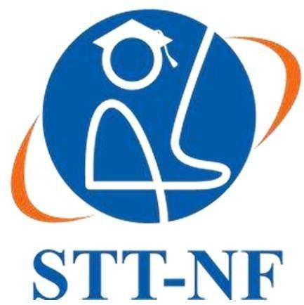
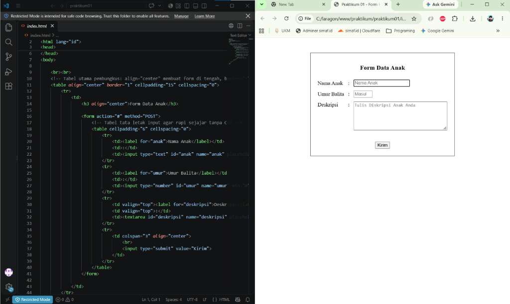
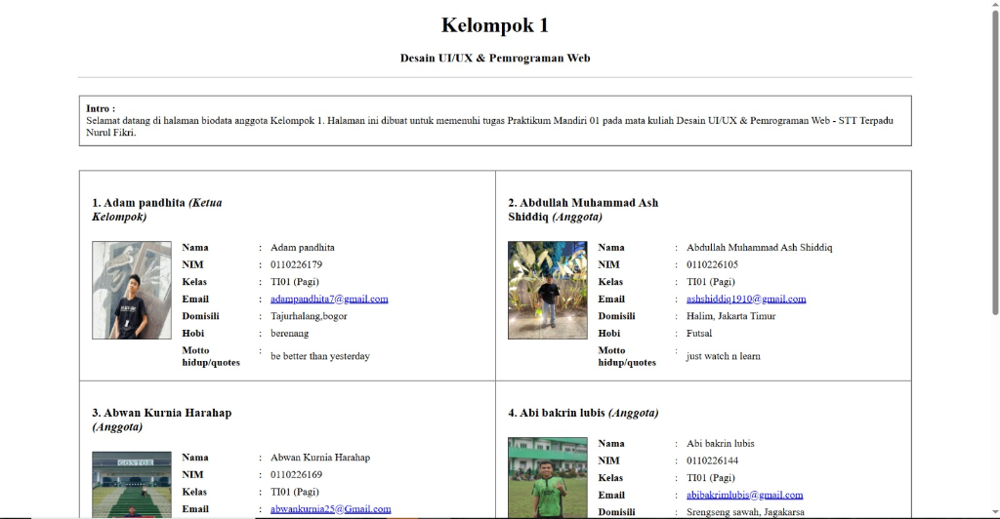

Setelah melakukan praktikum ini, mahasiswa mampu mempelajari dan melakukan implementasi tagtag HTML
HyperText Markup Language (HTML) adalah sebuah bahasa markup yang digunakan untuk membuat sebuah halaman web dan menampilkan berbagai informasi di dalam sebuah browser Internet. Bermula dari sebuah bahasa yang sebelumnya banyak digunakan di dunia penerbitan dan percetakan yang disebut dengan SGML (Standard Generalized Markup Language), HTML adalah sebuah standar yang digunakan secara luas untuk menampilkan halaman web. HTML saat ini merupakan standar Internet yang didefinisikan dan dikendalikan penggunaannya oleh World Wide Web Consortium (W3C).
HTML5 adalah versi terbaru dari HTML yang mengalami banyak penambahan spesifikasi dari versi sebelumnya. HTML5 bukanlah teknologi tunggal, melainkan kumpulan dari teknologi, fitur, dan API yang terdiri dari: revisi kelima HTML, CSS3, dan sekumpulan Javascript API. Dalam praktikum ini, dipelajari pula struktur dasar dokumen HTML5, penggunaan tag dan atribut, penambahan elemen multimedia (gambar), pembuatan list dan tabel, formulir (form) dengan berbagai jenis tipe input, serta elemen-elemen semantic HTML5 seperti <header>, <nav>, <figure>, <article>, <section>, <aside>, dan <footer>.

